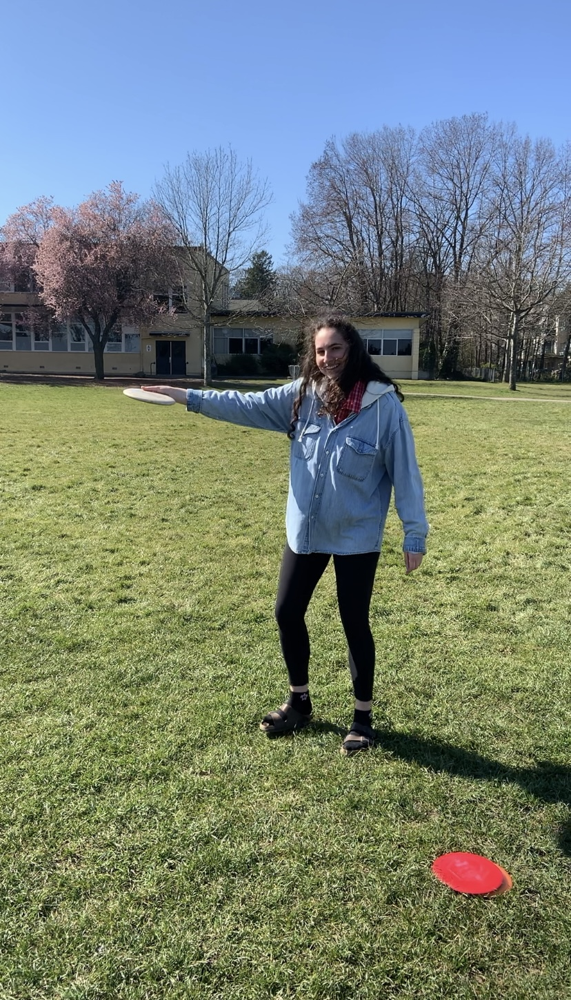
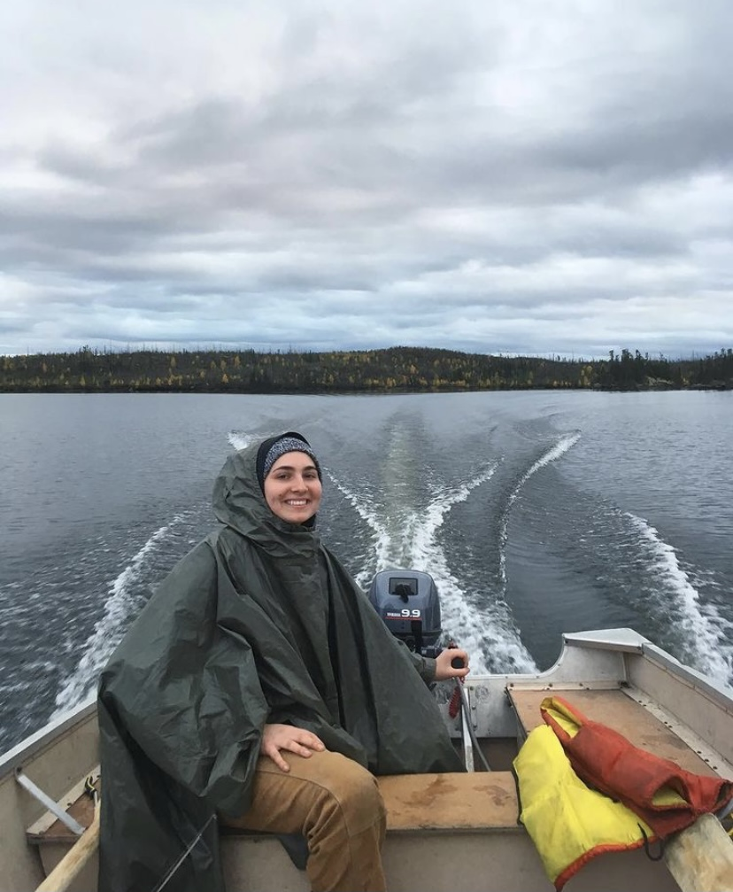
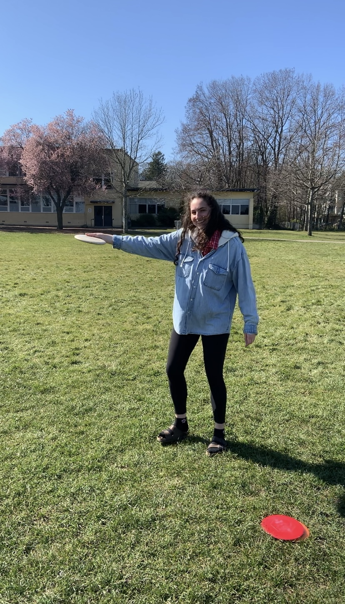
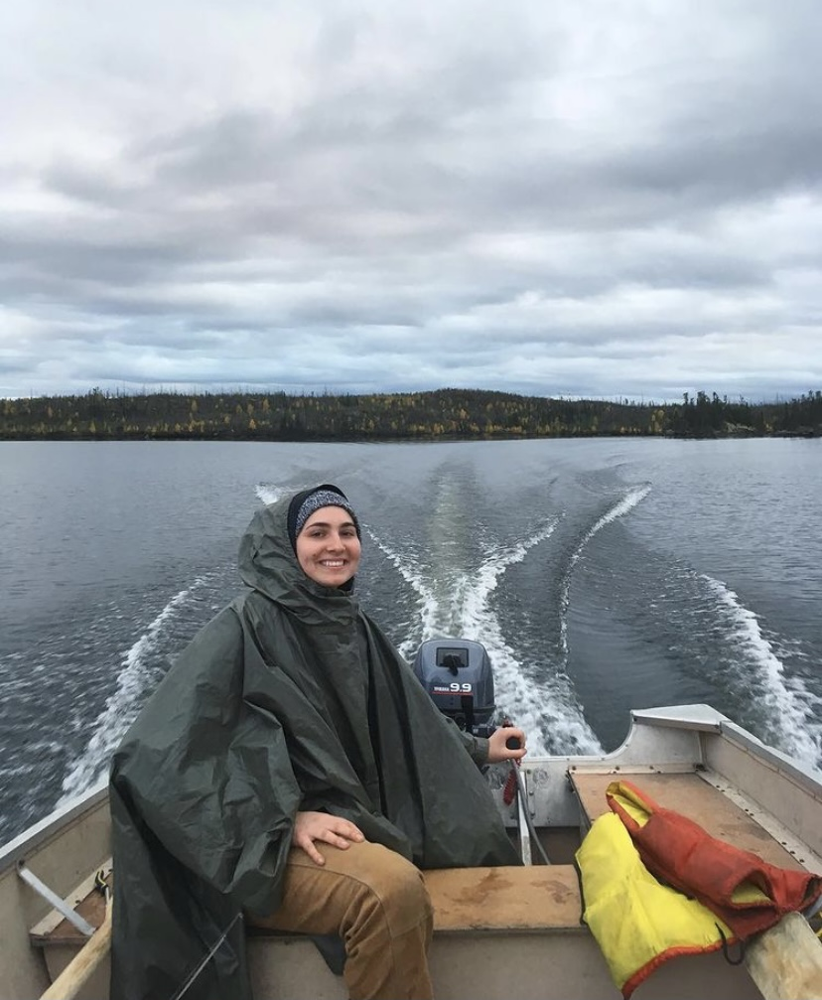

University of Victoria
Bachelor of Science in Kinesiology

GPA: A-
Relevant Courses
Throughout my degree so far, there have been many labs and group projects, which I think are two key aspects that set this program apart from others. Because of all of this lab exposure and team work, I have gained hands-on experience in many fields, and I feel more comfortable asking questions, jumping into situations where I think I can be of help, and also knowing when to take a back seat and let others take the lead. Below are some courses that I have taken (or are currently taking), that have helped shape my academic experience at UVIC.
Human & Functional Anatomy
These courses focused on the interplay between anatomical structure and function, as well as in depth analyzation of all systems (muscular, neural, integument, skeletal, respiratory, cardiovascular, digestive, renal, endocrine, lymphatic, and reproductive). The functional anatomy class included a trip to the cadaver lab in the medical sciences lab, where we could see the structures in movement right in front of us that we had learned about. It was an amazing experience, we moved between various different stations, each with a UBC medical student with a cadaver, and they spoke about a particular system or section of the body.
Case Study
Human & Forensic Osteology
These courses were some of the toughest of my degree, with heavy memorization of human skeletal remains, but they were incredibly interesting. There was emphasis on joints, bone types, upper limb, shoulder girdle, sternum & ribs, healing of fractures, vertebrae, histology, pelvis, lower limb, skull, and teeth. Each section was explored in depth in lecture, and was solidified with many hours spent in the lab with real human remains. The forensic course emphasized how bones are effected by various forms of trauma and how to identify them including: animal chewing/gnawing, biomechanics of bone trauma, timing of bone trauma, fractures, burial of bones, blunt trauma, polytrauma, total disintegration, reassembling unidentified skeletons, commingling of remains, surgical and dental hardware, skull fractures, facial fractures, spinal fractures, cerical spine injuries, sharp trauma, burning and cremation, ballistics, battered child syndrome, children's fractures, and red flag injuries for child abuse. There was also a presentation given by Jonathan Sheldan and Bruce Kennedy, on applying forensic osteology from a policing perspective. They focused on investigation players, toxicology, police, detectives, forensic entomology, foresnic anthropology, forensic odontology, coroners, and crown/defense.
Cellular, Systemic & Exercise Physiology
These courses studied the functions of all physiological systems, with specific attention to the respiratory, cardiovascular, nervous, endocrine and muscular systems. We were also taught how to take proper blood pressure and heart rate measurements, as well as how each of the aforementioned systems changes during exercise, aerobic and anaerobic metabolism, with diet and various diseases.
For one physiology courses, I gave a short presentation on strokes, and for another I gave a short presentation on cerebral palsy; the powerpoint presentations for each are attached here.
Stroke PPT
Cerebral Palsy PPT
Nutrition for Exercise & Health, and Concepts & Controversies
These courses covered topics such as the history of the human diet, regulation of feeding, metabolism, supplements, vitamins and minerals, macronutrients, dietary choices for health, and nutritional ergogenics for performance.
Measurement and Evaluation in Exercise Science
This course taught various laboratory techniques for testing body composition and fitness performance. We focused on validity and reliability, aerobic fitness testing, musculoskeletal (MSK) testing, among other aspects. Some of the lab skills learned include: VO2 max protocol (and safety measures), metabolic cart calibration, Rudolph valve assembly, skin fold measurement, various aerobic and MSK testing protocols, as well as how to properly navigate assessments in terms of soft skills and making the participant comfortable.

For this course we also created a test battery for which the paper is attached here.
Test Battery
This course focused on professional conduct as a personal trainer, principles of training, pre-participation health screening, assessing levels of physical activity and sedentary behaviour, prescribing aerobic training programs, prescribing high intensity interval training programs, prescribing programs for MSK health (strength, core, balance & flexibility), prescribing fat loss programs, prescribing exercise programs for clients with stable heart disease/diabetes, and adapted strength and conditioning. This course was paired with a lab in which we could learn the practical applications of the theory taught in lectures.
Motor Control, Motor Learning, Motor Development & Physical Maturation
These courses looked at the influences of human movement from the onset to action, and how we grow and mature, continually refining our gross movements into fine, practiced, and smooth movements. We also looked at posture, cerebral organization, as well as how movement disroders change our movement and processing. We also looked at human movement tendencies from birth to old age. We also looked at sensory and motor neurons, postural control, gait, and reflexes, movement planning, and movement control.
Motor Control Paper
Motor Learning Paper
Qualitative & Quantitative Biomechanics
Qualitative analysis of human movement looked at principles of motion such as stability, force, leverage, and linear and rotary motion. Biomechanics looked at sensors and data acquisition, linear kinematics and vectors, kinematics and calculus, forces, projectile motion, linear kinetics, angular kinematics, general, kinematics, electromyography, gait analysis, angular kinetics, and static and dynamic analysis.
Community & Population Health
This course looked at the evolution of health and the social determinants of health, how neighbourhoods and environments change health outcomes, food security, early childhood development, epidemiology, healthy aging, and Indigenous health.
Com&Pop Health Paper
Care & Prevention of Athletic Injuries
This course focused on medical equipment and wound care, emergency action plans, emergency care and bleeding, legal issues and risk management, head, neck and spinal injuries, chest and abdominal injuries, MSK injuries, concussion, return to play criteria, conditions and injuries of the lower leg, knee, ankle, and foot, conditions and injuries of the hip, groin and pelvic region, conditions and injuries of the forearm, wrist and fingers, as well as injury management and rehabilitation. This course was paired with a lab where we learned various taping techniques, emergency protocols, concussion management, immobilization/slings, as well as massage techniques and stretching. There was also a placement as part of the course, which I listed under the Experience section as "Student Athletic Therapist".
Developmental & Adaptive Physical Activity
This course focused on inclusive physical activity and overcoming barriers, intellectual disability and universal design, a functional approach to modifying movement (FAMME model), movement skills and concepts, assessment tools, play/games/sport, health-related fitness and conditioning, and outdoor recreation and summer camps. This course highlighted the importance of using "person-first" terminology, refering to and individual with a disability (instead of saying "disabled person". This language is important in pushing the narrative forward that individuals are not defined by their condition, they are humans just like all of us. The final project for this course was compiling a Staff Training Manual for a fictional recreation facility, and ensuring elements of universal design and inclusivity were at the forefront.
Dev&Adap PA Paper
Health Literacy & System Navigation
This course explored ways to improve health literacy, communication surrounding this issue, and highlighted the importance of navigating the health system and integrating pirmary and community care.


 


